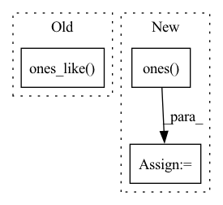

Pattern ID :41496
Before Change
Vector y(t).
// Get cumulative slope and intercept at each t
k_t = k * np.ones_like( t)
m_t = m * np.ones_like(t)
// Intercept changes
if deltas is not None and changepoints_t is not None:After Change
segment_id = np.sum(past_changepoint, axis=1) - 1
k_t = np.ones((len(t), 1)) * np.expand_dims(k, 0)
m_t = np.ones( (len(t), 1)) * np.expand_dims(m, 0)
k_t = np.squeeze(k_t[np.arange(len(t)), segment_id])
m_t = np.squeeze(m_t[np.arange(len(t)), segment_id])
trend = k_t * t + m_t
return trend
In pattern: SUPERPATTERN
Frequency: 3
Non-data size: 3
Instances Fragment ID: 116624866
Project Name: ourownstory/neural_prophet
Commit Name: 8dcdd6a5e564ef4412c327d2550025a5647b63a6
Time: 2020-05-22
Author: oskar.triebe@merantix.com
File Name: code/utils.py
M Class Name: AnonimousClass
N Class Name: AnonimousClass
M Method Name: piecewise_linear(4)
N Method Name: piecewise_linear(5)
M Parent Class:
N Parent Class:
M File Name: code/utils.py
N File Name: code/utils.py
M Start Line: 21
M End Line: 47
N Start Line: 51
N End Line: 62
Before Change
height = input_img.size(-1)
augmentated_data = []
if self.add_mask:
args.append(torch.ones_like( input_img[:1, :, :]) .long())
for datum in args:
if isinstance(datum, torch.Tensor) and datum.size(-2) == width and datum.size(-1) == height:
augmentated_data.append(augmentation(datum))After Change
else:
augmentated_data.append(datum)
if self.add_mask:
created_mask = torch.ones( [1, input.size(-2), input.size(-1)], device=self.device)
augmented_created_mask = augmentation(created_mask, is_mask=True)
augmentated_data.append(augmented_created_mask)
return augmentated_data
Fragment ID: 116624855
Project Name: anguelos/tormentor
Commit Name: 152a943b2533f1acff707b52ca0a23a464e933e0
Time: 2020-07-23
Author: anguelos.nicolaou@gmail.com
File Name: tormentor/augmented_dataset.py
M Class Name: AugmentedDs
N Class Name: AugmentedDs
M Method Name: augment_sample(1)
N Method Name: augment_sample(1)
M Parent Class: torch.utils.data.Dataset
N Parent Class: torch.utils.data.Dataset
M File Name: tormentor/augmented_dataset.py
N File Name: tormentor/augmented_dataset.py
M Start Line: 25
M End Line: 31
N Start Line: 27
N End Line: 37
Before Change
`x`: original torch.Tensor `x`.
x_shift = torch.zeros_like(x)[:, [0], :]
x_scale = torch.ones_like( x) [:, [0], :]
return x, x_shift, x_scale
// %% ../../nbs/common.scalers.ipynb 27After Change
shape[dim] = 1
x_shift = torch.zeros(shape)
x_scale = torch.ones( shape)
return x, x_shift, x_scale
// %% ../../nbs/common.scalers.ipynb 27 Fragment ID: 116624854
Project Name: nixtla/neuralforecast
Commit Name: d05531973f837da41e93b5a8dc631e0ff9739db4
Time: 2023-02-28
Author: cristiani.challu@gmail.com
File Name: neuralforecast/common/_scalers.py
M Class Name: AnonimousClass
N Class Name: AnonimousClass
M Method Name: identity_scaler(4)
N Method Name: identity_scaler(4)
M Parent Class:
N Parent Class:
M File Name: neuralforecast/common/_scalers.py
N File Name: neuralforecast/common/_scalers.py
M Start Line: 282
M End Line: 283
N Start Line: 283
N End Line: 287